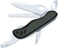
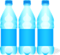
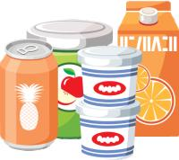
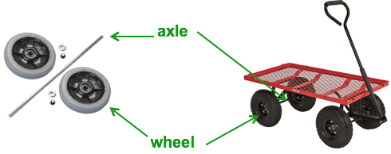
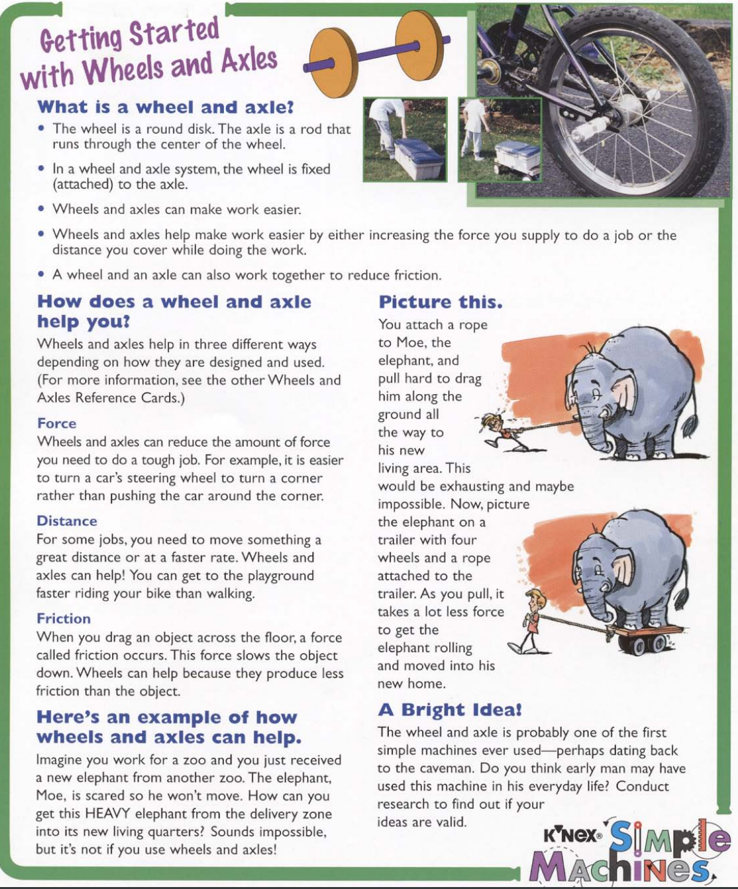

What You Should Know - K'Nex STEM Simple Machines: Wheels and Axles
 Important Vocabulary
Important Vocabulary
- Simple Machines - a tool with few or no parts that makes work easier
- Wheel and Axle Machine - a simple machine that is made up of a wheel that revolves on a rod (the axle)
- Work - when a force acts on an object causing it to move
- Force - a push or a pull
- Energy - the ability to do work
- Load - a heavy object
- Line Plot - a line plot is a type of data display that uses a number line and dots or X’s to show how often a value occurs
- Fraction - a fraction is a number that represents a part of a whole
- Data - numerical or categorical information collected to answer a question
Machines Make Work Easier
The job of a machine is to make work easier. It does this by changing how force is used to move an object, or load.
For example, you do work when you push a grocery cart at the store.
Pushing is the force you apply to your cart (your machine) to easily move groceries (your load). You also do work when you pull something in a wagon.
A force can be a push or a pull.
Machines Need Energy to Work
A machine needs a source of energy in order to do work.
With some machines, you may act as that source of energy, like the man and boy in the example.

An energy source supplies energy to the machine so that it can do the work.
Simple Machines
There are six types of simple machines. You can learn all about simple machines by watching this video or check out the definitions below.
Lever

A lever helps lift, pull, or push objects. It is a hard bar or board that rests and rotates on a point, but does not bend. The point (fulcrum) does not move, but it supports the bar and allows it to move.
examples: seesaw, claw of hammer
Wheel and Axle

A wheel connected to a bar called an axle makes moving and turning work easier.
examples: bicycle wheels, door knobs
Pulley

A pulley can help lift or move a heavy load. It is a wheel with a rope, belt, or chain wrapped around it. With effort from you or a motor pulling at the rope, you can lift things.
examples: flagpole, construction crane
Inclined Plane

An inclined plane is a ramp or another surface that is higher on one side that eh other. It helps us move heavy things up and down more easily.
examples: slide, truck ramp
Wedge

A wedge has two flat surfaces (planes) It is wider at one edge and pointer at the other. It is used to push things apart. When you push down on a wedge, it move things away from it. Because of it's shape it can also be used to stop objects from moving like a door and door stop.
examples: doorstop and ax blade
Screw
A screw is an inclined plane wrapped in a spiral around a cone or a cylinder. We often use screws to hold things together.
examples: screw, jar lid
Simple machines can be used separately, or they can be combined into one machine, called a compound machine. Think about how each of these machines work.

When one or more simple machines are combined to help perform a task, it is called a compound machine.
What Is a Wheel and Axle?
The wheel and axle are one of the earliest simple machines.
The wheel is connected to a bar called an axle.

How Do a Wheel and Axle Work?
In some types of wheel and axle machines, turning the wheel also makes the axle rotate.
For example, if you turn the wooden wheel, its axle will spin. The opposite is also true—if you turn the axle, the wheel will spin.
Because of their size difference, spinning a wheel to turn the axle takes less force than spinning an axle to turn the wheel.
If you want to use very little effort to wind up a rope, you can wind the rope on the axle by turning the wheel. Unfortunately, this also means it will take longer to wind it all up. The axle circumference is so small that it only rolls up a little rope with every rotation.
If you want to wind it up faster but use more force, you can wind the rope on the wheel and spin the axle. The wheel is so much larger allowing it to roll up more rope with every rotation.
Some wheels and axles move separately, like the wheels on a wagon. This helps with turning corners.

 More About Wheel and Axles
What other ways do wheel and axle machines help us do jobs?
Learn more about how wheel and axle machines make work easier.
Getting Started with Wheels and Axle
What Is a Line Plot?
A line plot is a type of data display. There are many types of data displays that you may already know: Bar graphs, line graphs, and pictographs are all types of data displays. Data displays are used to show data in an organized and visual way. This makes the data easier to understand. A line plot displays data on a number line. Above the number line, a dot or an X is used to represent each piece of numerical data that was collected.

What Is a Trundle Wheel?
A trundle wheel is a measuring device. It consists of a wheel and an axle. The wheel is marked with numbers that indicate a distance. The wheel is placed on the ground and pushed along a flat surface. Each time the wheel rotates one time, the wheel clicks or records the distance that was measured. Watch this video to see a trundle wheel in action.
Consider the following questions:
- How did the trundle wheel make work easier?
- What is the job of a trundle wheel?
- What parts of the trundle wheel help it do its job?
Career Connection and Real-World Application
Statistician
A statistician is a person who uses a type of math called statistics to answer important questions. Statisticians collect, organize, and display data using graphs. Statisticians also use math to analyze the data. The analysis may include averages and information about how often something occurred as well as the greatest (maximum) and least (minimum) numbers in the data set. For example, a sports statistician can predict the chances a football team will win against an opponent based on their previous records of wins and losses.

Mechanical Engineer
Mechanical engineers make work easier and more efficient by designing, building, researching, and testing new machines or improving existing machines. Mechanical engineers perform a wide variety of jobs. For example, a mechanical engineer may design a robot, build batteries for electric cars, or design satellites that measure precipitation. The median salary for a mechanical engineer in 2019 was $88,430 (Bureau of Labor Statistics, U.S. Department of Labor, Occupational Outlook Handbook, Mechanical Engineers, at Labor Statistics